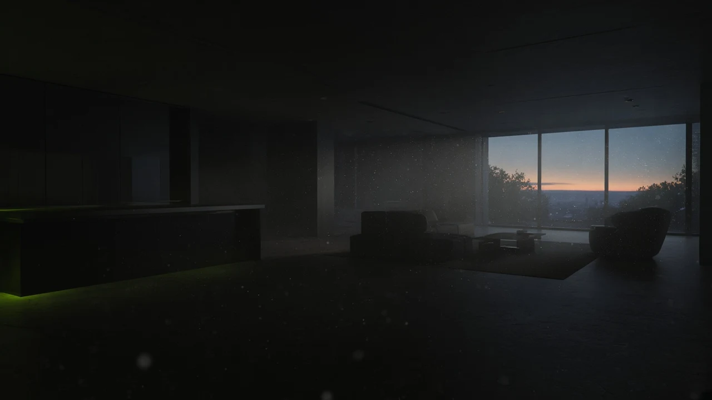
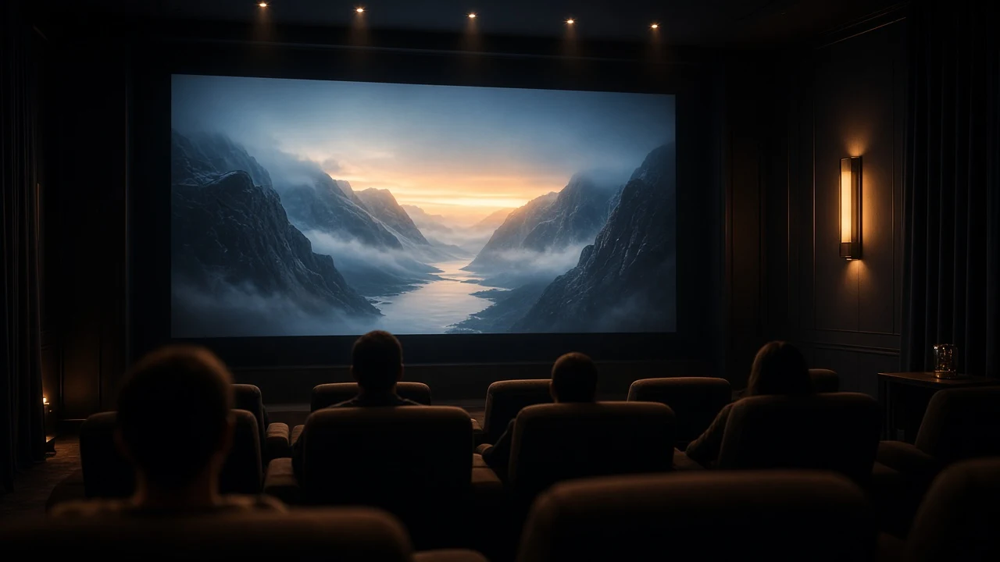

Temporal
Temporal upscaling
Multi-frame synthesis that keeps specular grit and micro-texture when you push resolution.
KINETIC
A vision studio for generative cinema, spatial capture, and realtime preview — directed, not assembled.


We start on location and in camera — dense stills and motion that carry specular truth into every generative pass.
Three working modes. Same frame language. Instant feedback when you switch.
Temporal
Multi-frame synthesis that keeps specular grit and micro-texture when you push resolution.
Spatial
Sparse monocular views into volumetric plates ready for lighting and camera moves.
Live
Realtime preview so creative calls happen in the room, not in overnight renders.
Tell us the world, the cut, and the deadline. We answer with a frame language — not a slide deck.
studio@kinetic.vision